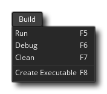

The build menu is where you can choose to build your project either for testing, debugging or as a final executable. The available options are:
- Run - Run your current project on the chosen target platform for testing. For the different compile options available when compiling please see the section on Compiling. Note that this command is the same as pressing the Run button in the IDE.
- Debug - Run your current project for testing with the debugger so that you can see detailed performance information and debug any errors or issues you may have. For more information on debugging, please see the section Debugging. Note that this command is the same as pressing the Debug button
in the IDE.
- Clean - GameMaker Studio 2 keeps a cache of files to help speed up compile time when testing. However sometimes a "stale" cache can lead to odd and unexpected errors in your game, in which case the first thing you should do is clean the cache from here and re-test. It is also a good idea to clean the cache before you create a final executable for the target platform. Note that this command is the same as pressing the Clean Cache button
in the IDE.
- Create Executable - This will compile the current project and create an executable file (or files) for the target platform. It will first open the file explorer so that you can select where you want to save the project and then compile the game. See the section on Compiling for more information on setting up the compile targets. Note that this command is the same as pressing the Create Executable button
in the IDE.
- Show Remote Worker Installer - This will open a file explorer window on the location of the installer for the Remote Worker tool (see here for more information on Remote Workers).